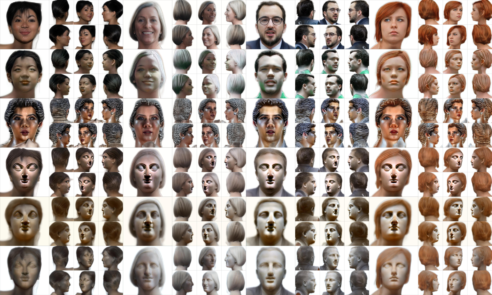

Joker edits. From top to bottom: input, StyleCLIP, StyleGAN-NADA, StyleGANFusion, DiffusionGAN3D, ours.
Sketch edits. From top to bottom: input, StyleCLIP, StyleGAN-NADA, StyleGANFusion, DiffusionGAN3D, ours.
Pixar edits. From top to bottom: input, StyleCLIP, StyleGAN-NADA, StyleGANFusion, DiffusionGAN3D, ours.


Statue edits. From top to bottom: input, StyleCLIP, StyleGAN-NADA, StyleGANFusion, DiffusionGAN3D, ours.
Werewolf edits. From top to bottom: input, StyleCLIP, StyleGAN-NADA, StyleGANFusion, DiffusionGAN3D, ours.
Zombie edits. From top to bottom: input, StyleCLIP, StyleGAN-NADA, StyleGANFusion, DiffusionGAN3D, ours.